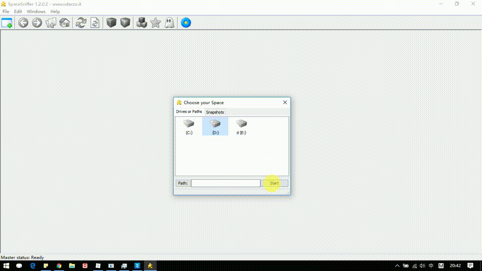
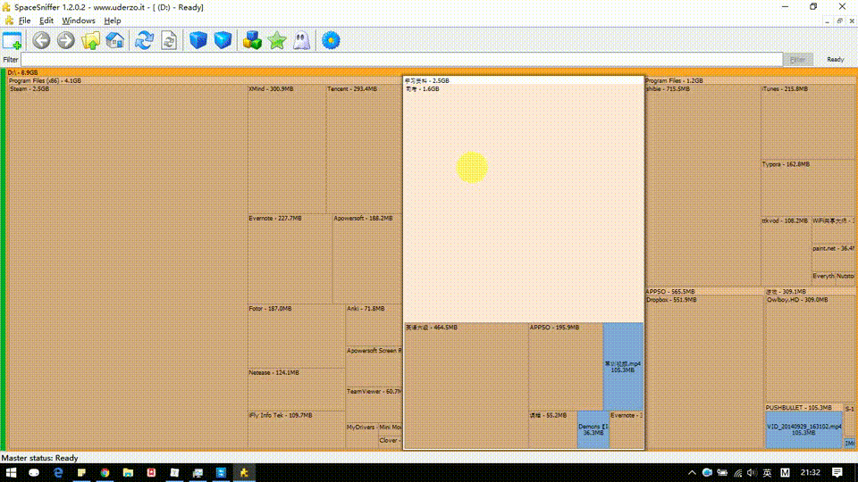

Windows平台快速统计文件夹大小
文章目录
Linux 平台很简单 du -sh * 一行代码就搞定了。Windows 怎么办呢？磁盘很多，想清理一波，文件很多的情况下，系统自带的资源管理器，统计文件夹大小，速度慢的让你想放弃
Everything
windows 平台下做开发的朋友，没有亲手用过 everything，也应该听朋友提过。搜索速度远超系统自带的资源管理器。既然系统层面支持快速索引文件，肯定就能找到类似的工具，建立文件索引的同时，统计下文件的大小。
WizTree
官网：https://www.diskanalyzer.com/
普通的安装模式或者绿色版本解压运行
速度快，数据展示类型丰富，左侧是树状图模式，右边是文件类型，当然也有图形化展示，在软件底栏。
SpaceSniffer(update 2023 不再维护更新了)
软件官网：http://www.uderzo.it/main_products/space_sniffer/
操作很简单，选择对应的盘符，软件会用图形化的方式，展示文件夹体积，体积越大，图像中对应的矩阵也就越大，其余操作，自己点点就明白了，支持输入条件过滤文件：
- 文件体积过滤
- 文件日期过滤

